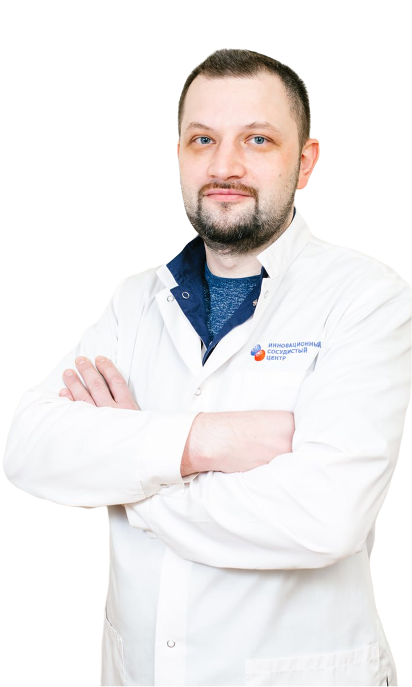
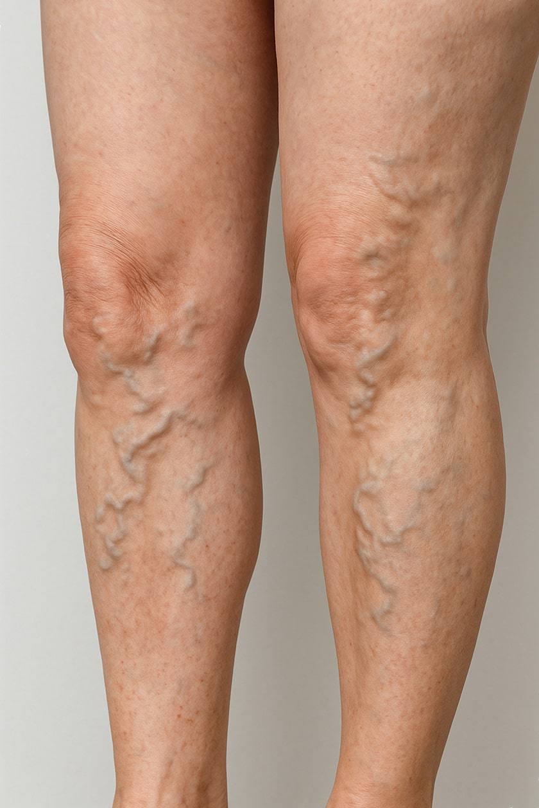
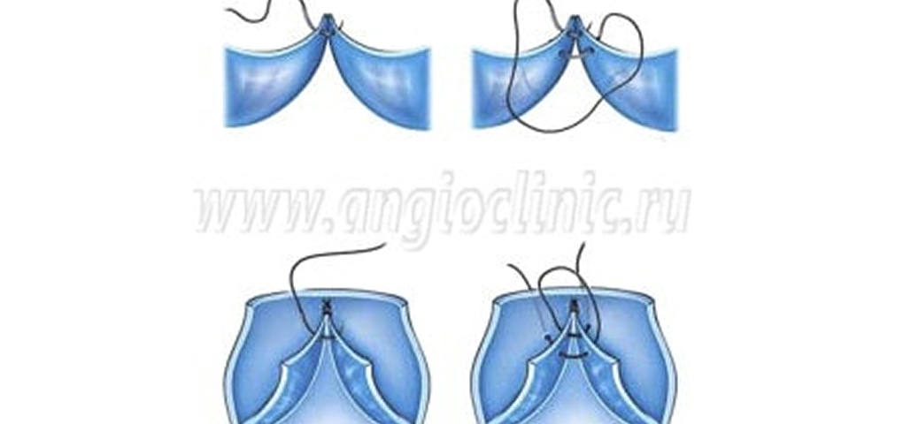
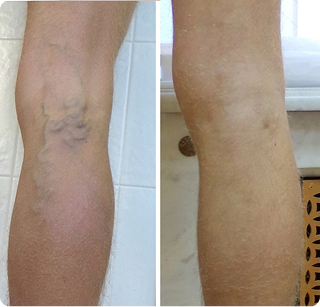

С конца XIX хирурги начали осуществлять попытки лечения варикоза и его осложнений. В историческом аспекте эти операции отличались большим травматизмом и низкой эффективностью. Однако уже с конца XX века происходит объективное отделение амбулаторной "варикологии" от сердечно-сосудистой хирургии. Она становится высокоэффективной и малоинвазивной специальностью, с ценами, доступными большинству пациентов с варикозной болезнью. Параллельно развивается эстетическое направление — лечение сосудистых звёздочек. В России этим занимаются флебологи, в других развитых странах дерматологи.
Флебология
в Инновационном сосудистом центре
Запишитесь на лечение варикоза
Уникальные технологии инновационного центра
- Микрохирургические операции при поражении самых мелких сосудов
- Гибридные сосудистые операции
- Рентгенэндоваскулярные операции без разрезов
- Реконструктивно-пластические операции при обширных дефектах тканей
Скидка 10%
Для записавшихся с этой формы

К флебологу нужно идти при появлении хотя бы одного из следующих симптомов:

Центры современной флебологии, открытые нами в Москве, Воронеже, Твери и в Пскове проводят инновационное лечение пациентов с варикозной болезнью и сосудистыми звёздочками, венозными тромбозами и тромбофлебитами. Каждая клиника оснащена современным диагностическим и лечебным медицинским оборудованием, а работают в них опытные флебологи, лучшие в своей специальности. Центры современной флебологии, открытые нами в Москве, Воронеже, Твери и в Пскове проводят инновационное лечение пациентов с варикозной болезнью и сосудистыми звёздочками, венозными тромбозами и тромбофлебитами. Каждая клиника оснащена современным диагностическим и лечебным медицинским оборудованием, а работают в них опытные флебологи, лучшие в своей специальности. Центры современной флебологии, открытые нами в Москве, Воронеже, Твери и в Пскове проводят инновационное лечение пациентов с варикозной болезнью и сосудистыми звёздочками, венозными тромбозами и тромбофлебитами. Каждая клиника оснащена современным диагностическим и лечебным медицинским оборудованием, а работают в них опытные флебологи, лучшие в своей специальности.
Даже если явных признаков заболевания нет, флеболог поможет убедиться в том, что состояние сосудов в норме.
Регулярный осмотр позволяет:
Без своевременного лечения болезни вен могут привести к серьёзным осложнениям, тромбозам, инвалидности и даже угрозе жизни. Раннее обращение к врачу позволяет предотвратить осложнения, восстановить здоровье сосудов и сохранить качество жизни.
1
выявить патологии до появления осложнений
2
предупредить развитие тромбозов и язвенных поражений
3
подобрать персональную схему лечения и профилактики
4
сохранить активность, здоровье и качество жизни
Заболевания, которые мы лечим:
Методы диагностики:
Основной метод диагностики в флебологии —
ультразвуковое дуплексное сканирование (УЗДС). Оно позволяет визуализировать
вены, оценить состояние их стенок и клапанов, обнаружить тромбы и определить
направление кровотока.
В некоторых случаях назначают флебографию —
рентгеновское исследование с введением контрастного вещества. Этот метод даёт
детальное изображение сосудов, но используется реже.
При сложных патологиях применяют магнитно-резонансную
флебографию, которая даёт послойное изображение сосудов
Также флеболог проводит визуальный и физикальный осмотр —
изучает состояние вен на ногах, в паховой области и промежности, а также
других локализаций (в зависимости от анамнеза).
Как проходит первый прием:
1
Сначала необходимо записаться на консультацию к
флебологу на сайте или по телефону.
2
На приёме флеболог эксперт выполняет УЗИ исследование
сосудов нижних конечностей, которое входит в стоимость консультации.
3
По результатам проведённого исследования доктор
совместно с пациентом принимают решение об оптимальном методе лечения
варикозной болезни нижних конечностей, учитывая степень поражения вен,
особенности анатомии, и стадию заболевания.
4
Назначается удобное для вас время для выполнения
процедуры.
5
Специалисты нашего центра флебологии гарантируют
соответствие качества медицинской помощи при заболеваниях сосудов лучшим
мировым практикам и принимают все возможные меры, чтобы лечение прошло без
боли и осложнений
Наши технологии:
Лазерные вмешательства при варикозе без разрезов и боли
Современное лечение варикозной болезни невозможно представить с помощью устаревших больших разрезов и открытой операции на ногах. В XXI веке на смену грубым операциям пришли малоинвазивные методики. В наших клиниках варикозную болезнь лечат лазером без каких-либо разрезов. Вмешательство продолжается меньше часа и пациент может сразу заниматься повседневными делами без ограничений. Лазерный метод безопасен, косметичен и высокоэффективен.
Эндоваскулярное лечение варикоза малого таза
Тазовые боли являются большой проблемой для женщин репродуктивного возраста. В половине случаев причиной является расширение вен матки и яичников. Такие пациентки долгое время безуспешно лечатся у гинекологов. Наш центр предлагает эффективную технологию лечения - эндоваскулярную эмболизацию вен малого таза. В результате лечения у большинства женщин с этой патологией проходят болевые ощущения и улучшается качество жизни.

Эффективное лечение хронической венозной недостаточности
Посттромботическая болезнь глубоких вен приводит к появлению стойкого отёка конечностей и развитию трофических язв. Такие пациенты редко получают эффективную помощь и часто вынуждены постоянно использовать компрессионный трикотаж и годами заживать трофические язвы. Наши хирурги с успехом используют ангиопластику и стентирование глубоких вен для восстановления их проходимости. При посттромботической окклюзии подключичной вены мы можем восстанновить её проходимость и устранить причину - синдром грудного выхода.
Весь спектр эстетической флебологии
Сосудистые звёздочки, видимые вены на руках и в области наружных половых органов нередко доставляют эстетические проблемы для пациентов. От таких пациентов часто отмахиваются в государственных больницах. В Инновационном сосудистом центре с пониманием относятся к косметической флебологии. В наших клниках возможно избавиться от косметических проблем с помощью современных технологий. За годы работы нашими специалистами отработаны лучшие методики лечения, гарантирующие отличный эстетический результат.

Инновационное лечение тромбозов глубоких вен
В нашей клинике применяются современные технологии растворения тромбов с помощью эндоваскулярной хирургии. Катетерный тромболизис позволяет полностью восстановить проходимость глубоких вен, если срок тромбоза не превышает месяца. При угрозах отрыва тромба мы можем удалить эти тромбы с помощью операции или установить специальные ловушки. В нашем центре применяются микрохирургические шунтирующие операции на венах для обхода закупоренных участков вен.
Лечение проводится в клиниках:
Ценовая политика клиники
Наша главная цель - сделать современную флебологию доступной для любого жителя России.
Стоимость лечения в наших клиниках доступна большинству пациентов и постоянно снижаются. Можно обратитсься в любой из нащих центров и получить современную диагностику и малоинвазивное лечение варикозной болезни ног.
Лечение
варикозной болезни
варикозной болезни
от 25 000 ₽ до 70 000 ₽ за одну ногу
Лечение
тромбозов глубоких вен
тромбозов глубоких вен
от 25 000 ₽ до 70 000 ₽ за одну ногу
Лечение
трофических язв
трофических язв
от 25 000 ₽ до 70 000 ₽ за одну ногу
В Воронежском, Московском и Тверском филалах
возможно лечение по полису ОМС бесплатно для пациента
Центры современной флебологии, открытые нами в Москве, Воронеже, Твери и в Пскове проводят инновационное лечение пациентов с варикозной болезнью и сосудистыми звёздочками, венозными тромбозами и тромбофлебитами. Каждая клиника оснащена современным диагностическим и лечебным медицинским оборудованием, а работают в них опытные флебологи, лучшие в своей специальности.
Результаты лечения
в Инновационном сосудистом центре

Наш центр не стоит на месте и стремится внедрить всё самое новое и передовое в лечении вен на благо наших пациентов. Для них созданы отличные условия для диагностики заболеваний вен нижних конечностей, применяются уникальные современные технологии флебологии, но цены на наши услуги доступны для большинства пациентов.
В чём преимущества лечения заболеваний вен
в наших клиниках?
- Колоссальный совокупный опыт наших флебологов составляет более 15 000 прооперированных пациентов.
- Отличная диагностическая база и протоколы обследования. Самые опытные специалисты по УЗИ диагностики работают в наших клиниках.
- Полноценный стационар сосудистой и эндоваскулярной хирургии с возможностью микрохирургических операций на венозных клапанах.
- Программа наблюдения и ведения пациентов в послеоперационном периоде с бесплатной коррекцией возможных рецидивов.
- Мы решаем все проблемы с сосудами у наших пациентов от сосудистых звёздочек до инфарктов.
- Программа создания лояльной среды в пациентском сообществе, когда вашим знакомым предоставляются более выгодные условия для лечения.
- Прямой контакт с вашим флебологом, когда врач оставляет вам личный телефон для срочной связи.
- Возможности интерактивных консультаций с помощью сайта, самостоятельный выбор времени записи на повторный осмотр после лечения.
Ответы на часто возникающие вопросы
Специалист занимается проблемами вен, его задача — оценить состояние венозных сосудов.
Специалист занимается проблемами вен, его задача — оценить состояние венозных сосудов.
Специалист занимается проблемами вен, его задача — оценить состояние венозных сосудов.
Специалист занимается проблемами вен, его задача — оценить состояние венозных сосудов.
Специалист занимается проблемами вен, его задача — оценить состояние венозных сосудов.
Специалист занимается проблемами вен, его задача — оценить состояние венозных сосудов.
Специалист занимается проблемами вен, его задача — оценить состояние венозных сосудов.
Специалист занимается проблемами вен, его задача — оценить состояние венозных сосудов.